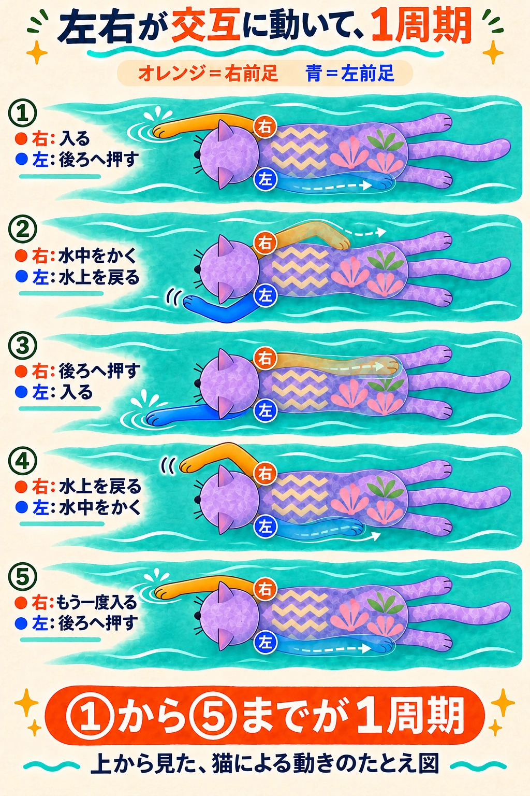

2026年11月22日 公開
バランスは、動かないこと？ 脚が沈む理由を「感覚のせい」にする前に

水に浮こうとすると、脚が下がってくる。「自分はバランス感覚が悪いのかな」。そう考えたとしても、不思議ではありません。身体を水平に保てない様子は、陸上でふらつく姿に似ているからです。
けれど、脚が下がったという見た目だけでは、バランス感覚の良し悪しは分かりません。 身体の特徴や水から受ける力、静かに浮いているのか泳いでいるのかによっても、考える条件が変わります。
この記事では、まず「バランス」と「バランス感覚」を分け、陸上から水中へ順にたどります。読み終えたら、同じ「脚が下がる」を、どんな場面で、身体のどこが、どう変わったのかという言葉に置き換えられることを目指します。原因を一つに決める前に、見えていることを整理するための記事です。
1バランスがいいとは、動かないこと？
電車が急に揺れた場面を思い浮かべてください。身体が傾き、このままでは倒れそうになる。そこで一歩踏み出し、移した足で身体を受け止める。
この時、「動いてしまったから、バランスが悪い」と言えるでしょうか。

むしろ、足を動かしたから立ち続けられています。守りたかったのは、最初の足の位置ではなく、倒れずに立っていることでした。実際には一歩を出さず、足首や胴体の動きで調整する場合もあります。
歩く時も同じです。身体をその場に固定したら、次の一歩は出ません。支える足を入れ替えながら、歩き続けられるように身体を調整しています。
ここでは、したい動作を続けられるように、身体の向きや動きを調整する働きとして、バランスを考えます。姿勢制御についてのHorakの総説も、身体を支える面や重力、周囲の環境に対して、身体の向きと安定を調整する複雑な働きとして整理しています。[1]
だから、立つ時と歩く時では、必要な調整が違います。泳ぐ時にも、手足を動かさないことをそのまま「良いバランス」の条件にはできません。何をしている途中なのかが、先に必要です。
バランスを保つことと、動かないことは同じではありません。 動きが多いほどよい、ということでもありません。見るのは動いた量より、その動きが何を保つことにつながっているかです。 では、身体は何を手がかりに動きを調整しているのでしょう。
2バランス感覚は、一つのセンサーではない
先ほどの電車で、身体はどうやって傾きに対応したのでしょう。足を動かす力があっても、今の身体の状態を捉えられなければ、適切な調整にはつながりません。
その手がかりには、主に次のような情報があります。
- 目： 周りの景色と、自分の向きや動きとの関係。
- 耳の奥： 頭の動きや重力に関わる情報。
- 身体： 筋肉や関節の状態、皮膚への接触など。
耳の奥の仕組みは「前庭」と呼ばれます。ただし、前庭一つで姿勢を決めているのではありません。複数の情報を組み合わせて身体の状態を捉え、それに応じた動きにつなげています。[1]

電車が揺れると、周囲の見え方や頭の動き、足裏にかかる圧力などが変わります。身体はそれらの情報を使って調整します。図の一歩は、その調整の一例です。「目で見て、次に耳で感じ、最後に足を動かす」という順番を表しているわけではありません。
身体の状態を知るための情報
自分の動き
重力
の状態
皮膚の接触
感じ取る働きと、動かす働きが一緒に関わります。
線は情報のつながりです。三つの感覚を順番に使う図でも、意識して一つずつ考える手順でもありません。動いている間も情報は入り続けます。
仕組みを簡略化した説明図：Horak（2006）／感覚の割合を示す図ではありません。
ここで、二つの言葉を整理できます。バランスを保つには、身体の状態を捉える働きと、実際に身体を動かす働きの両方が必要です。 日常でいう「バランス感覚」は、そのうちの感覚情報の利用に関わります。強い筋肉があることとも、耳の奥の機能だけとも、同じではありません。
水中で脚が下がった時も、見えているのは身体の変化です。その一場面だけから、目・耳・身体の情報をどう使ったかまでは読み取れません。
バランス感覚を、一か所に入っている「上手さのスイッチ」と考えない。 そう整理できると、次の疑問が出てきます。足裏を床につけられない水泳では、手がかりや支えはどうなるのでしょう。
3水泳では、手がかりも支えも変わる
陸上で立つ時、身体は足裏が床に触れる場所で、床から押し返す力を受けています。この接触には二つの役割があります。身体を支える力を受けることと、足裏の圧力などから身体の状態を知ることです。
一方、水に浮いている時は、足裏の下に床がありません。水に浸かった身体の表面が、水から力を受けています。静かな水から受ける力を全体としてまとめた、上向きの力が浮力です。

床がなくなっても、身体を支える力までなくなったわけではありません。「何も支えていない」のではなく、力を受ける場所と受け方が変わったのです。
プールの壁を蹴る場面なら、その変わり目が分かります。足が壁に触れている間は、壁から力を受けられます。離れた後には、その接触がなくなります。それでも浮力は働き、前へ進んだり手足を動かしたりすれば、その動きに伴う水の力も受けます。


水中でも目・耳・身体の情報を使う働きは残ります。ただし、床との接触がなくなり、身体の向きや見えるもの、受ける力が変わります。陸と同じ仕組みを使っていても、調整する条件まで同じではありません。
ここから「片足立ちが得意なら、浮くのも得意」とは決められません。これは姿勢制御の考え方を水泳へ当てはめた整理で、陸のテストから泳力を予測した実験結果ではありません。
この章で押さえたいのは、水中のバランスを考えるには、本人の調整と、水から受ける力の両方を見る必要があるということです。そこで次は、後者を少し詳しく見ます。上向きの浮力があるのに、なぜ脚は下がるのでしょう。
4水に支えられていても、なぜ脚が下がる？
「浮力が上向きなら、身体は水平になるはず」。そう考えたくなりますが、上向きに支えることと、水平な向きを保つことは別です。力には大きさと向きだけでなく、どこに働くかという違いもあるからです。
静かに浮く身体で、下へ引く重力と、上へ押す浮力を考えましょう。

図の二本の矢印を、それぞれ上下に延ばしてみてください。その線を「作用線」といいます。線が横にずれていると、二つの力は身体を回そうとします。上半身側が持ち上がり、脚側が下がる向きです。

猫は案内役。硬い物体に同じ大きさ・逆向きの二力だけが働く模式図です。左は同じ作用線、右はずれた作用線。矢印は移動ではなく力を表します。人体の実測結果ではありません。
比較図は、同じ大きさの逆向きの力を、硬い物体の違う場所に加えた模式図です。上下へ動かす力が打ち消し合っても、回そうとする働きは残る。ここが大切です。図は人体の形や、実際に傾く角度を再現しているわけではありません。
では、脚が沈もうとする回転の傾向は、どの人でも同じなのでしょうか。
Zamparoらの研究では、16〜50歳の30人を含む対象群について、水平な身体の脚が沈もうとする回転傾向と、身体の特徴との関係を調べています。30人の群では、体格や身体密度との関連が認められました。身体密度は、同じ大きさにそろえた時の身体の重さに相当する量です。感覚の良し悪しや筋力トレーニングの効果を測った研究ではありません。[2]
- 何を比べた？
身体の特徴が違う人たちで、静かに浮く時の「脚を沈める向きの回転傾向」を比べた。
30人の群：16〜50歳。体格や身体密度などに着目。
- 何が分かった？
この群では、体格や身体密度と、回転傾向との関連が見られた。
- ここから何が言える？
脚が沈もうとする傾向を考える時、身体の特徴も関係する。ただし、関連は原因の証明ではない。
脚が下がった姿だけでは、その人の「バランス感覚が悪い」とは判定できません。
BAL-01：Zamparoら（1996）の30人の群を説明。感覚の良し悪しや努力、泳ぐ速さを測った試験ではありません。もう一つの12〜17歳110人の群とは合算せず、ここでは説明していません。原著未確認の測定姿勢・呼吸条件は描いていません。
この結果が教えるのは、脚が下がるという現象には、本人の動きの調整だけでなく、身体の特徴に関わる物理的な条件もあるということです。身体の特徴で泳ぎのすべてが決まる、という意味ではありません。
つまり、静かに浮いた時に脚が下がった。それだけでは、「感覚が悪い」「腹筋が弱い」という判定にはまだ届きません。最初の疑問に対する答えが、ここまでで一つ見えてきました。
ただし、ここまで考えたのは静かに浮く身体です。腕を回し、身体の一部が水面から出入りするクロールにも、同じ説明が使えるでしょうか。
5静かに浮く身体と、泳ぐ身体は条件が違う
クロールでは、腕が水から出て、前へ戻り、また入ります。水に浸かっている身体の部分が変わるので、浮力が働く条件も変わります。静止した姿勢を一枚の写真で見る時とは違い、条件そのものが泳ぎの途中で移り変わるのです。
その違いを考える材料が、Yanaiの研究です。競泳者11人が最大下のスプリント速度（全力より遅い速度）でクロールを泳ぐ様子を撮影し、身体のモデルを使って、浮力が身体を回そうとする働きを推定しました。前章で説明した静止時の脚を下げる回転傾向に対し、この研究で推定した泳動作の周期平均は、脚を上げる向きでした。[3]


静止時の模式説明と、実泳中のモデル推定を分けて読む
A 静かに浮く身体の説明
- 説明する働き
- 浮力が身体を回そうとする働き
- 回転の向き
- 脚を下げ、
頭を上げる向き
脚が下がる静止姿勢の模式説明。Bと同じ実験の対照値ではありません。
B クロールで泳ぐ条件
- 調べたもの
- 浮力が身体を回そうとする働き
- 報告された向き
- 脚を上げ、
頭を下げる向き
Yanai（2001）：競泳者11人。映像と身体モデルから推定した最大下スプリントの周期平均
ほかの力も身体に働きます。この結果だけで「脚が実際に上がった」とは言えません。
静かに浮く時の説明を、泳ぐ時へそのまま移せません。
比較しているのは浮力の回転効果です。泳ぐ速さや脚の移動距離ではありません。泳ぎの結果は周期平均であり、どの瞬間も同じ向きという意味ではありません。
Bの出典：Yanai（2001）。特定の泳者・条件とモデルの仮定に基づく結果です。Aは前章の力学的な模式説明です。
この結果は、「止まって浮く時の説明を、そのまま泳ぎに当てはめると見落とすものがある」と教えてくれます。前の章と答えが食い違って見えるのは、身体が水から力を受ける条件が違うからです。別の研究の数値を、同じ人・同じ実験の成績として比べているわけではありません。
もう少し詳しく：一周期と、平均の読み方
「周期を通した平均」を、もう少し詳しく見てみましょう。次の図は周期の数え方の例です。オレンジが右前足、青が左前足です。上から見た図で、「右」の目印がある同じ前足を追います。人の腕の動きを猫で表したたとえです。

右手が水に入ってから、次に右手が水に入るまで。これが一周期の例です。それを二回続けた区間が2周期です。途中の腕の位置も含めて見るので、始めと終わりの二枚だけを比べるのではありません。
図の①から⑤までで一周期です。この一続きの動きをもう一回行えば、二周期になります。五つの絵は五周期を表すものではありません。研究の測定周期数や測定開始点を再現した図ではありません。研究が報告した周期平均の向きは、どの瞬間も同じ向きだったことを意味しません。
もう一つ、大切な区別があります。調べたのは、浮力が身体を回そうとする働きであって、脚が実際に何センチ上がったかではありません。泳ぐ身体には、手足の動きに伴う水の力なども働きます。

猫で表した力のたとえ。左右の力が同じ大きさで、上下の力もつり合い、最初は止まっている箱を考えています。泳いでいる身体の力がつり合うと断定する図ではありません。
箱を違う向きに押す図と同じく、一つの力だけを取り出しても、全体の動きは決まりません。この研究を「泳げば脚は必ず上がる」「キックはいらない」という助言には置き換えられないのです。また、競泳者の結果を、子どもや初心者にそのまま当てはめることもできません。
ここまでの答えをまとめると、静かに浮く時の脚下がりと、泳いでいる途中の脚下がりは、まず別の条件として見ることになります。似た姿でも、同じ理由とは限りません。
では、その違いを踏まえて、自分の泳ぎをどう見直せばよいのでしょう。
6「バランスが悪い」の前に、どんな場面だったか
次に泳ぎを見る時は、いきなり良し悪しをつけず、「脚が下がった」という短い言葉に、情報を足してみてください。ここからは、研究結果そのものではなく、ここまでの整理を使った観察の提案です。
最初に足すのは、場面です。静かに浮いていたのか、壁を離れて進んでいたのか、腕や脚を動かして泳いでいたのか。第5章で見たように、その違いで考える条件が変わります。
次に見るのは、身体の形と向きです。足先が下がる様子だけでは、下の二つの変化を区別できません。

一つは、腰のあたりで身体の形が変わり、胴体に対して脚が下がる場合。もう一つは、身体の並びを保ちながら、全身が水面に対して傾く場合です。前者では「胴体と脚の位置関係」、後者では「全身と水面の位置関係」が変わっています。両方が重なることもあります。
図を使って、短く確かめてみましょう。次は読み方のための仮の例です。
壁を離れて進む人の脚が下がった。腰の折れ曲がりは目立たず、身体の並びを保ったまま、頭側と足側の高さが変わった。
この説明から言えるのは、「壁を離れて進む場面で、主に全身の向きの変化が見えた」ということです。「腹筋が弱い」とも「バランス感覚が悪い」とも、まだ言っていません。形の変化が目立たないことも、身体をまったく調整していない証拠にはなりません。
逆に、胴体と脚の角度が変わっていれば、同じ「脚が下がった」でも、観察した内容は違います。見分けにくければ「分からない」で構いません。分からない部分を、原因らしい言葉で埋めないことにも意味があります。
普段の泳ぎを振り返る時には、「どの場面で／どこの形・向きが／どう変わった」と一文にしてみてください。足の下がりを確かめるために、息止めを長くしたり、新しい課題を増やしたりする必要はありません。すでに見た泳ぎや、普段の無理のない泳ぎの一場面で考えられます。
どんな身体の形を目指すかは、別稿の「良い姿勢とけのび」へつながります。全身の向きの変化と、「キックと脱力」で扱う足首の力の入れ方も、いったん別の問いとして考えられます。
バランスを保つとは、動かずに固まることではありません。したい動きを続けるために、身体を調整することです。そして、水中で見える姿には、その調整だけでなく、水から受ける力も関わっています。
「自分はバランスが悪い」で終わっていた場面が、「あの時は、身体のここが変わっていた」に変わる。その違いは、すぐに速く泳げるという約束ではありません。けれど、次に確かめることを、自分の言葉で選ぶための出発点になります。
参考資料と確認範囲
- Horak（2006）姿勢の向きと安定を支える仕組みについての総説。掲載版全文を確認し、バランス・感覚の概念整理に使用。水泳中の感覚の使い方を直接検証した研究ではありません。
- Zamparoほか（1996）脚が沈もうとする回転傾向と身体の特徴。抄録から確認できた対象・関連の範囲で使用。個人の原因診断や改善法を導いたものではありません。
- Yanai（2001）クロール中の浮力の回転効果。今回確認したPubMed抄録の範囲で使用。競泳者の映像と身体モデルによる推定で、方法・表の全文は今回再確認できていません。記事内の模式図は論文の実測図の転載ではありません。